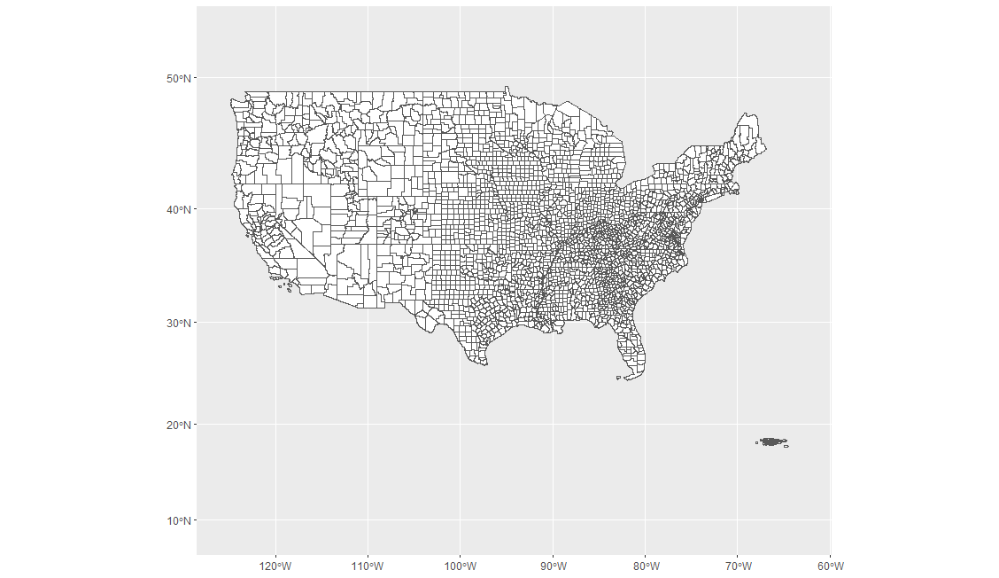

2 Connecting R and ArcGIS
You will need to install the R-ArcGIS Bridge for the appropriate version of R that you’re using, which can be found here. Once downloaded, you will need to unzip and install the package in R from the local file. Alternatively, you can install from ESRI directly in R:
install.packages("arcgisbinding", repos = "<https://r.esri.com>", type = "win.binary") For more documentation of R-Bridge for ArcGIS, see here. Also, you will need to install the ArcGIS metapackage, which is still in development and currently includes the arcgislayers and arcgisutils packages.
remotes::install_github("R-ArcGIS/arcgis")For updates, see here.
An example is presented below on how to pull data from ArcGIS online by using a feature layer or feature server url.
# load libraries
library(arcgisbinding)
arc.check_product()
library(arcgislayers)
library(arcgisutils)
library(ggplot2)
# connect to ArcGIS.com
arc.portal_connect(url = "https://noaa.maps.arcgis.com", user = "", password = "") # enter ArcGIS.com username and password
arc.check_portal()
# create an example map of USA using REST API Layer:USA Counties
# provide feature server url and feature layer
feature_server_url <- "https://services2.arcgis.com/FiaPA4ga0iQKduv3/arcgis/rest/services/TIGERweb_Counties_v1/FeatureServer/0"
# create a feature layer object
data <- arc_open(feature_server_url)
# query the feature layer and return the layer as an sf (simple feature) object
sf_data <- arc_select(data)
# create map from sf object
USA_map <- ggplot(data = sf_data) +
geom_sf() +
theme_classic()
USA_map

Figure 2.1: Map of the USA.